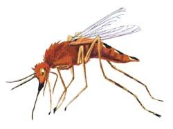

Malaria has troubled mankind for millennia. Before Ronald Ross’s proof, the dreaded disease was attributed to supernatural influences such as angered deities, evil spirits, or the black magic of sorcerers. Later on, with the observations that malaria occurred more often near the water logged areas, it was attributed to miasmata and effluvia from swamps [hence its name, Italian mal aria=bad air]. While Laveran, a French army surgeon stationed in Constantine, Algeria, demonstrated the parasites in the blood of a patient suffering from malaria on November 6, 1880, Ronald Ross, a British officer in the Indian Medical Service, solved the problem of malaria transmission by demonstrating the malaria parasite forms (poetically called by him as the million murdering seeds) within the gut wall of the mosquitoes on August 20, 1897.Mor
{kind=link}
{kind=link}
Anopheles Mosquito
Principal mode of spread of malaria is by the bites of female Anopheles (=Gk., hurtful, harmful) mosquito. Of more than 480 species of Anopheles, only about 50 species transmit malaria, with every continent having its own species of these mosquitoes: An. gambiae complex in Africa, An. freeborni in North America, An. culicifacies, An. fluviatilis, An. minimus, An. philippinensis, An. stephensi, and An. sundaicus in the Indian subcontinent. An. leucosphyrus, An. latens, An. cracens, An. hackeri, An. dirus etc., have been identified as the vectors for the transmission of P. knowlesi.The habits of most of the anopheline mosquitoes have been characterised as anthropophilic (prefer human blood meal), endophagic (bite indoors), and nocturnal (bite at night) with peak biting at midnight, between 11 pm and 2 am. The blood meal from a vertebrate host is essential for the female mosquitoes to nourish their eggs. The mosquitoes find their host by seeking visual, thermal, and olfactory stimuli and of these, carbon dioxide, lactic acid, skin temperature, and moisture are more important mosquito attractants. Depending on the strength of these stimuli, the attractiveness of different persons varies, with adults, men, and larger persons being more attractive than others. When a mosquito bites an infected individual, it sucks the gametocytes, the sexual forms of the parasite, along with blood. These gametocytes continue the sexual phase of the cycle within the mosquito gut and the sporozoites that develop then fill the salivary glands of the infested mosquito. When this female mosquito bites another man for a blood meal, the sporozoites are inoculated into the blood stream of the fresh victim, thus spreading the infection.
Other modes of transmission: Rarely malaria can spread by the inoculation of blood from an infected person to a healthy person. In this type of malaria, asexual forms are directly inoculated into the blood and pre-erythrocytic development of the parasite in the liver does not occur. Therefore, this type of malaria has a shorter incubation period and relapses due to persisting exoerythrocytic forms do not occur.
1. Mother to the growing fetus (Congenital malaria): Transfer of parasitized red cells from infected mother to the child either transplacentally or during labor can lead to in malaria in the newborn, called as congenital malaria. Congenital malaria seems to be rarely reported and has always been considered to be more frequent in the nonimmune population than in the endemic areas. In recent years, however, higher prevalence of congenital malaria ranging from 8% to 33% has been reported from both malaria-endemic and nonendemic areas, including the United States, Europe, India, etc.Congenital malaria has been reported due to all four plasmodium species that commonly infect humans, although most cases are reported following P. falciparum or P. vivax malaria in the mother. In nonendemic countries, P. malariae may cause a disproportionately higher number of congenital malaria cases due to its longer persistence in the host.Congenital malaria occurs more often during the first pregnancy.
2. Transfusion Malaria: Malaria can be transmitted by transfusion of blood from infected donors. First reported in 1911, transfusion malaria is one of the most common transfusion-transmitted infections today. The risk of acquiring transfusion malaria is very low (1 case per 4 million) in nonendemic countries such as the United States, whereas in the endemic countries, it is much higher (>50 cases per million donor units).
Following a malaria infection, the individual may remain infective for weeks to months, or even years, in case of P. malariae infection. Therefore, those who have suffered from malaria should not donate blood for at least 3 years after becoming asymptomatic, and proven carriers of P. malariae should never donate blood.
The risk of transmission is higher in transfusion of fresh, whole blood, particularly when the blood has been stored for less than 5 days and the risk is considerably lesser after 2 weeks.The risk of transmission is extremely low in case of transfusions of plasma, plasma components, or derivatives devoid of intact red cells.
It is difficult to identify malarial infection in donated blood specimens. Most donors implicated in transfusion-transmitted malaria are predominantly semi-immune with very low parasite loads and the infectious dose is estimated to be 1 to 10 parasites in a unit of blood. Detection of such low parasitemia is difficult or impossible with the peripheral smear examination or with more sensitive tests such as the antigen or polymerase chain reaction (PCR) assays. However, presence of high titer antibodies in such individuals offers some scope for identification of malaria in donated blood and the recent development of enzyme immunoassays (EIAs) with improved sensitivity to P. falciparum and P. vivax, the predominant transfusion threats, has heightened the appeal of serological testing. Although universal serological screening in nonendemic regions is not cost-effective, targeted screening of donors identified at risk by travel-based questioning can significantly reduce wastage. The development of automated protein microarray-based technology has the potential to further enhance antibody/antigen sensitivity. There are reports of successful use of RDTs in screening donated blood.
In non-endemic countries, donor deferral in combination with screening for specific antimalarial immunoglobulin provides an effective means of minimizing the risk of transmission. In endemic countries, more specific donor questioning, consideration of seasonal variation and geographical distribution may help to identify the population of donors who are most likely to be infected. In addition, the administration of antimalarials to transfusion recipients may help to prevent transmission. It is also important to ensure that blood collected in highly endemic regions is not transfused to patients from areas of low endemicity. In endemic countries, chemoprophylaxis was found to be particularly useful for protecting young children with no or little malarial immunity from developing acute and potentially fatal posttransfusion malaria.
Transfusion malaria manifests with a shorter incubation period of 2–4 days as the inoculum contains the erythrocytic forms of the parasite and pre-erthrocytic phase of the life cycle within the liver does not occur. Typical symptoms of fever, malaise, and headache occur and in case of P. falciparum infection, particularly in the nonimmune patients, the infection can progress rapidly into fatal illness. Diagnosis of transfusion malaria requires a keen sense of clinical suspicion and any recipient of blood transfusion developing such symptoms should be tested immediately for malaria. As the transfusion-acquired P. vivax malaria does not have the exoerythrocytic phase, relapses do not occur.
3. Needle stick injury: Cases of malaria transmission through needle-stick injuries, accidentally among health care professionals (some even fatal) or due to needle sharing among drug addicts, have also been reported.